| Data Throughput Issues | ||||||||||||||||||||||||||||||||||||||||||||||||||||||||||||||||||||||||||||||||||||||||||||||||||||||||||||||||||||||||||||||||||||||||||||||||||||||||||||||||
|
I have been being asked to troubleshot the throughput issue so many times. Unfortunately my experience says "There is no clear/logical/deterministic way to troubleshoot for throughput test". Then what are we supposed to do ? Are we supposed to rely on "Hit and Miss" strategy everytime we do the throughput test ? Is this process totally random ? No at least we are not in such a worst case, fortunately. I think we can set some guidelines at least.
First thing to remember for throughput troubleshooting
One sentence. "Throughput troubleshooting is not simple at all.", "Don't expect it to be simple.". If I solved the problem with single shot, I would say "I was just lucky, It is not because I am technically competent".
Even troubleshooting with wired communication is not easy. Think about how many more factors would get involved in the data path.
That's all for the first thing. Now let's move to the second important thing for this issue. What is the second thing ?
It's "Don't give up. You will eventually find the solution!" -:). It is just matter of time and depend on how much dedicated you are during the troubleshoot.
Now the third things comes (Many people think this is the first thing since it sound more technical, but I don't think it is the case). What I want you to do as the third item is "list up all the nodes from the data transmitter to the reciever, and follow all the steps without skipping anything.". One example I can give you is (this is an example where you use a Network Emulator for the test). i) IP Application Software on PC (e.g, iperf, FileZilla) ii) TE port on PC (e.g, Ethernet Card). iii) TE port on throughput test equipment (e.g, Data packet port on Network Emulator) iv) PDCP layer on test equipment v) RLC layer on test equipment vi) MAC layer on test equipment vii) L1 (Transport and PHY) layer on test equipment viii) L1 (Transport and PHY) layer on UE (mobile phone or data card) ix) MAC layer on UE x) RLC Layer on UE xi) PDCP layer on UE xii) TE port on UE (e.g, Modem connector) xiii) TE port on PC (e.g, USB port the UE is connected to) xiv) IP Application Software on PC to which the UE is connected.
The more you understand on each of these items, the better position you are in for troubleshooting. (If you really enjoy your job as engineer, one of the topic I would recommend you is to try with throughput troubleshoot or optimization. To me it looks like an art at the same time being a technology).
Now you would ask "Which component on the list is most important, most critical factor for the throughput ?". I wish I had a simple/clear answer to this, but my experience says "the answer varies depending on the situation". Especially it would differ depending on what kind of radio technoloty your device is using. (e.g, Is it R99 WCDMA Device, HSDPA, HSPA+, LTE ?)
In addition to the major technical factors listed above, sometimes very simple things as follows make you spend several hours to several weeks for troubleshoot if you are in bad luck. i) LAN Cable type (Sometimes you have to use 'direct cable' and sometimes you have to use 'cross over' cable). ii) Category of LAN cable. (Is it Cat 5 cable or Cat 6 cable ?) iii) Ethernet Port Capability (Is it only for 10/100 M, or Gigabit ethernet ?) iv) Firewall setting on your PC (I will go back to this later in a separate section).
I will try to go through each type of radio technology and try to point out the important factor for that specific technology. (Try to memorize all the steps listed above sicne I will talk about the steps for each of the following sections).
I often see two extreme opinion on the result of throughput test result. Followings are those two with example LTE Cat3 MIMO download throughput.
Opinion 1 : I know the ideal max throughput is 100 Mbps, but I think it doesn't make much sense at least for a mobile device because in live network, you would never be in such a situation where a network allow such a huge resource allocation for any single UE and Radio Signal Quality also would not be good enough to achieve those throughput. so I am happy if the throughput result gives 30~40 Mbps.
Opinion 2 : The 3GPP sepecfication says the Max throughput for LTE Cat 3 is 100 Mbps, so I want to get exact 100 Mbps throughput displayed on my IP traffic monitoring tool.
I think there is problem with both opinion, but I would not say much on Opinion 1. Just think you are lucky if your customer has this kind of opinion -:).
I will talk something about Opinion 2 in this section. What would be the problem of this opinion ? First he should not expect to get the same number on IP traffic monitor as 3GPP spec sheet shows, because what 3GPP spec sheets shows is the physical layer throughput, not the IP layer throughput. Between physical layer and IP layer, there are various kinds of overhead getting inserted. So it is natural to see a little bit less throughput on IP traffic monitor than the number on 3GPP spec sheets. Then you may ask.. what if we want to measure only PHY throughput. Will I get the same Max throughput as the 3GPP spec document says ? In WCDMA, HSDPA, HSUPA probably 'Yes', but in LTE you would still have a little low throughput than the 3GPP spec value even in PHY throughput. It is because there is some subframes where you cannot allocate full RBs (100 RBs in case of 20Mhz, Cat 3). These frames are where SIBs are scheduled. Especailly SIB2 is causing a lot of overhead because it is supposed to be transmitted at subframe 5 at every two SFN. The amount of phyiscal layer overhead varies depending on how eNodeB allocate RBs for user data for the subframe where the SIB is transmitted. According to my experience, I saw roughly three different strategies for this case.
Option 1 : eNodeB still allocate RBs for the SIB transmission subframe, but the number of RB is a little bit lower than the Max RB Option 2 : eNodeB does not allocate any RBs for user data at SIB transmission subframe. Option 3 : eNodeB stop transmitting SIBs when connected state and allocate the MAX RBs even for the SIB transmission subframe.
I think live network eNodeB is using Option 1 and I saw most of test equipment is using Option 2 or Option 3. But Option 3 may cause some unexpected side effect and this options is not widely used. So in theory, you may get a little bit higher throughput if you use real eNodeB in 'test lab' (not in live network) comparing to test equipment. (You would get much less throughput in live network because you cannot control the eNodeB as you want and the signal quality is not as good as in the test lab. ).
In concolusion, whatever method you use you would not get the 100% same as specified in 3GPP specification. In my personal opinion, it would be considered OK if you can achieve around 90% of the ideal Max throughput without much of packet error. (If the difference between the test throughput and ideal throughput is due to packet area, not much due to overhead.. you'd better investigate further to find the root cause of the problem).
There are several different approaches for throughput testing and followings are a couple of possible sectors (or profiles) I can think of for throughput testing. (It would be a little bit tricky to draw a line between profile (A) and (B) because it would be difficult to achieve very high data rate without meeting a certain degree of Real Time Requirement. So Very High Throughput would imply a certain degree of Real Time Requirement as well).
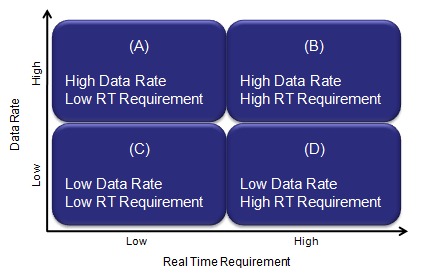
If you think about the time when HSDPA came out first and then evolve to higher and higher categories and think about the time when LTE device came out first. Almost everyone's interest have been focused on "Can the device achieve the maximum throughput specified in 3GPP spec ?" On the other hand, some people say "Why we care about testing the max throughput ? In live air, there wouldn't be any condition that allows max throughput anyway. For example, if you have the LTE Cat 3 device, your max downlink throughput is around 100 Mbps. Would live network ever allocate this amount of resources for a single UE ? or can we have such good signal quality that can allows this kind of throughput ?". The answer would be "Probably Not". But this kind of testing would still be very meaningful not only for marketing reason but also for technical reason. The condition required to achieve the max throughput would be one of the most stressful condition for almost all the components which is in the ways of data traffic. So achieving a max throughput can be a very good criteria of the whole device functioning under a very stressful (fully loaded) condition and also be a good validation criteria for chipset's encoding/decoding process, L2, L3 and various device drivers. Let's assume that my device has passed the the max data throughput test (profile : B), does it automatic indicator saying "It would pass all the low throughput profile, like profile (C) or (D) ?". Probably "Yes, for profile (D)", but "No, for profile (C)". Until recently (as of Apr 2013), most of low throughput application would belong to profile (D), like browsing, email etc. But as LTE come out and become more widespread, we foresee more real time application based on data traffic which would belong to profile (C), e.g, Voice over LTE, on-line Gaming etc. In this case, just passing the max throughput would not guarantee the pass in this area. The key requirement on this category would be "It should 'guarantee the required Bit Rate (GBR)' and it should be delivered 'On-Time' (Real Time)'. Even though we can think of a couple of check points for this feature, there are not much practically known about implementing/testing this feature yet. I will get this updated as I get more hands-on experience/information on this. (On radio side, a lot of effort should be invested on optimizing the low layer scheduling parameters, e.g, Semi-persistant scheduling, some RLC parameters and optimal resource allocation based on Buffer Status Report etc).
What kind of tools we need for troubleshoot ?
Since the throughput process get involved in the full protocol stack and one/two PCs, and in addition IP tools, you would need to have tools to monitor each and every steps along the end-to-end data path. The logging tool should be able to show not only scheduling and event log, but also all the payload (contents of the data). Without these tools, you would end up saying "I have tested this device with many different test equipment and didn't see any problem before. This is the only equipment that I see this problem.. so the problem is on the equipment side." or "I have tested many different UE with this equipment, but I didn't see this kind of problem before. So this is UE side problem". Both may be right or wrong at the same time. Our job as an engineer is to find the root cause of the problem and fix it, not blaming the other party. (But to be honest, I have to admit I often blame the other party without even realizing it. Is this a kind of bad nature of engineers ? or my personal problem ?) Let's try to have proper tools and skills to fight against the problem, not fight against your counter part engineers. My recommendation about the tool is as follows :
i) Ethernet, IP logging tool (e.g, Wireshark) ii) UE side logging tool iii) Network side logging tool iv) YOUR SKILLs to use and analyze the logging tool v) YOUR PATIENCE to step through the log for each and every transmission and reception
I saw a lot of persons trying to do IP throughput test in most complicated setup (e.g, Case 3 without IP monitoring tool) from the beginning without preparing any troubleshoot tools. If you are lucky, you will get it working. But in most case especially when the user tries the test for the first time with the specific test setup. But I always recommend user to prepare proper troubleshooting setup first and do some preparational test before you try with the final setup.
For example, if you want to test with < Case 2 > configuration, first try with < Case 1 > Configuration and make it sure that there are no PC related issues.
If you want to try to test with < Case 3> configuration, first try with < Case 1> & < Case 2>, make it sure that there are no router related issue.
Have Wireshark both on UE PC and Server PC in Case 2/ Monitor PC in Case 3. You have to be able to trace each steps of the path described below for each cases.
Does this sound too tedious ? Trust me ! This would be the fastest way to get the solution for any trouble.
< Case 1 >
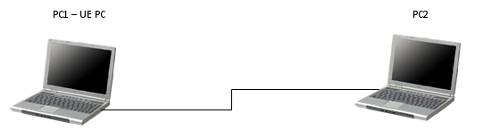
< Case 2>
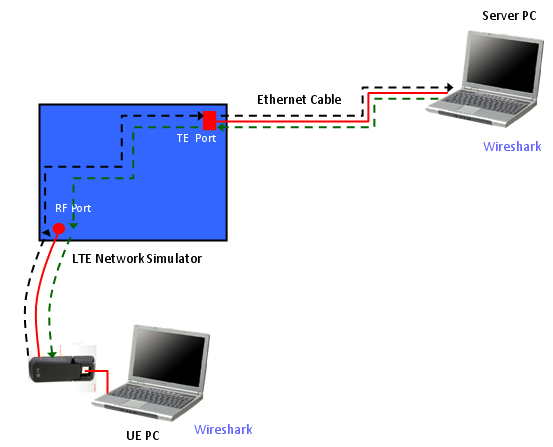
Ping Path from UE PC to Server PC : Ping Request : UE PC -(1)-> UE IP Driver -(2)-> UE PDCP -(3)-> UE RLC -(4)-> UE MAC -(5)-> UE PHY -(6)-> RF Connection -(7)-> Equipment PHY -(8)-> Equipment MAC -(9)-> Equipment RLC -(10)-> Equipment -(11)-> Equipment PDCP -(10)-> Equipment TE -(11)-> Network Interface on Server PC Ping Reply : Server PC -(1)-> Equipment TE -(2)-> Equipment PDCP -(3)-> Equipment RLC -(4)-> Equipment MAC -(5)-> Equipment PHY -(6)-> RF Connection -(7)-> UE PHY -(8)-> UE MAC -(9)-> UE RLC -(10)-> UE PDCP -(10)-> UE IP Driver -(11)-> Network Interface on UE PC
< Case 3 >
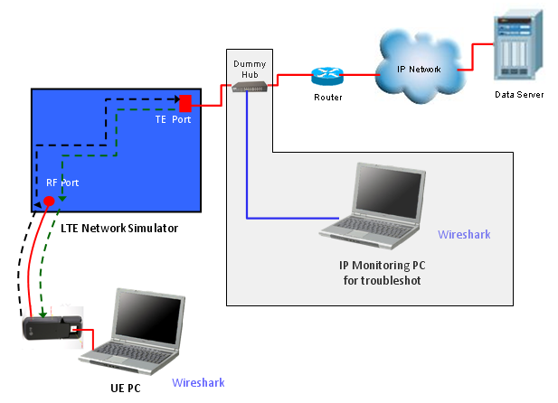
Ping Path from UE PC to Server PC : Ping Request : UE PC -(1)-> UE IP Driver -(2)-> UE PDCP -(3)-> UE RLC -(4)-> UE MAC -(5)-> UE PHY -(6)-> RF Connection -(7)-> Equipment PHY -(8)-> Equipment MAC -(9)-> Equipment RLC -(10)-> Equipment -(11)-> Equipment PDCP -(10)-> Equipment TE -(11)-> Dummy Hub -(11)-> Router -(12)-> Network Interface on Server PC Ping Reply : Server PC -(1)-> Router -(2)-> Dummy Hub -(3)-> Equipment TE -(4)-> Equipment PDCP -(5)-> Equipment RLC -(6)-> Equipment MAC -(7)-> Equipment PHY -(8)-> RF Connection -(9)-> UE PHY -(10)-> UE MAC -(11)-> UE RLC -(11)-> UE PDCP -(12)-> UE IP Driver -(13)-> Network Interface on UE PC
Basic and Common steps to check before flood
Even before you try any throughput test (e.g, UDP, TCP), there are several critical steps to go through. In many cases, I had been asked to be on-site saying "SOMETHING is NOT WORKING" (These two words are what we most frequently use, but most ambiguous word. What is the "SOMETHING" ? What do you mean by "NOT WORKING". .. Let's not get into this too much -:).
First thing you have to check is to check if your device get assigned any IP address that a network or Network Emulator assigned. If you have UE logging tool or special menu/tool on your UE to show the IP address, it will be great help.
Another way to check the IP allocation for UE if the UE is a data card or connected to PC as a modem (tethered to PC), try ipconfig command as follows.
C:\> ipconfig Ethernet adapter Local Area Connection 9: Connection-specific DNS Suffix . : IP Address. . . . . . . . . . . . : 192.168.1.1 Subnet Mask . . . . . . . . . . . : 255.255.255.0 Default Gateway . . . . . . . . . :
In some case, this result (i.e, ipcofig shows the IP address allocated to UE) is enough signal for you to go to next step like ping. But sometimes just ipconfig result would not be a guarantee for next step. (I think it depends on UE driver implementation).
A better insurance in this case would be as follows. Open up the Network Connection Menu and see if you see the Modem and Network interface card properly configured and connected.
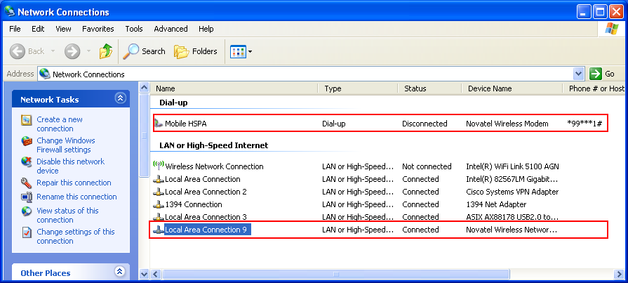
And openup the LAN card property for the UE and set the IP allocated to UE.
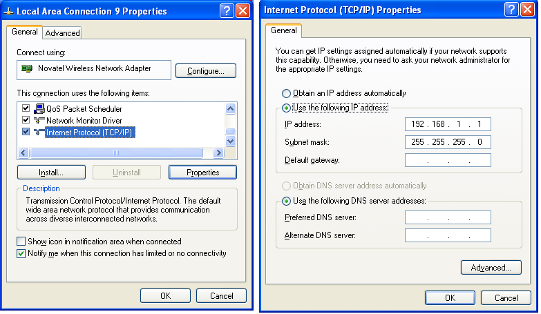
Now you are ready to take real first step for the test, which is PING test. I am using Ping for two purpose. One is to check if the end to end (from server to client) data path is established and the other is to figure out the latency (delay time) between server and client.
First I would do "ping to self". In my test, I allocated 192.168.1.1 to UE and 192.168.1.2 to server. All of these test was done on client PC, the PC to which the UE is connected.
This would always works.. but I did to give you some reference for latency for local loop. It is under 1 ms as you see. C:\>ping 192.168.1.1 -l 1400 (WCDMA DL 384K / 64 K, Local Loopback)
Pinging 192.168.1.1 with 1400 bytes of data:
Reply from 192.168.1.1: bytes=1400 time<1ms TTL=128 Reply from 192.168.1.1: bytes=1400 time<1ms TTL=128 Reply from 192.168.1.1: bytes=1400 time<1ms TTL=128 Reply from 192.168.1.1: bytes=1400 time<1ms TTL=128
Ping statistics for 192.168.1.1: Packets: Sent = 4, Received = 4, Lost = 0 (0% loss), Approximate round trip times in milli-seconds: Minimum = 0ms, Maximum = 0ms, Average = 0ms For another reference, I ping to the Gateway my PC is connected to via wireline LAN. In my case, it shows almost same latency as local loop. C:\>ping 10.10.10.180 (on Wireline, to Gateway)
Pinging 10.10.10.180 with 32 bytes of data:
Reply from 10.10.10.180: bytes=32 time<1ms TTL=128 Reply from 10.10.10.180: bytes=32 time<1ms TTL=128 Reply from 10.10.10.180: bytes=32 time<1ms TTL=128 Reply from 10.10.10.180: bytes=32 time<1ms TTL=128
Ping statistics for 10.10.10.180: Packets: Sent = 4, Received = 4, Lost = 0 (0% loss), Approximate round trip times in milli-seconds: Minimum = 0ms, Maximum = 0ms, Average = 0ms Now for another reference, I pigned to a server which is far away from my PC. I don't know how many routers are there between my PC and the other PC. I don't know how far it is away from my PC geographically. Anyway the result is as follows. Now you see pretty long response delay here which is around 220 ms. C:\>ping 64.233.183.99 (on Wireline)
Pinging 64.233.183.99 with 32 bytes of data:
Reply from 64.233.183.99: bytes=32 time=222ms TTL=43 Reply from 64.233.183.99: bytes=32 time=221ms TTL=43 Reply from 64.233.183.99: bytes=32 time=221ms TTL=43 Reply from 64.233.183.99: bytes=32 time=222ms TTL=43
Ping statistics for 64.233.183.99: Packets: Sent = 4, Received = 4, Lost = 0 (0% loss), Approximate round trip times in milli-seconds: Minimum = 221ms, Maximum = 222ms, Average = 221ms Now let's get into the situation that we are really interested. I connected UE to my Network Emulator with WCDMA DL 384K /UL 64 K radio bearer and got the following result. If you try with your device, you may have different number.. so the exact number for the time delay would not be so important, but you see pretty long delay which is around 323 ms. I put "-l" option to send almost full size IP packet. It is direct connection from UE to Network emulator. But if you see the delay value here, it is greater than the delay between my PC and a remote server on wireline network which may have over 100 hops along the line. C:\>ping 192.168.1.2 -l 1400 (WCDMA DL 384K / UL 64 K)
Pinging 192.168.1.2 with 1400 bytes of data:
Reply from 192.168.1.2: bytes=1400 time=332ms TTL=128 Reply from 192.168.1.2: bytes=1400 time=326ms TTL=128 Reply from 192.168.1.2: bytes=1400 time=324ms TTL=128 Reply from 192.168.1.2: bytes=1400 time=323ms TTL=128
Ping statistics for 192.168.1.2: Packets: Sent = 4, Received = 4, Lost = 0 (0% loss), Approximate round trip times in milli-seconds: Minimum = 323ms, Maximum = 332ms, Average = 326ms I used exactly same UE and same driver. Only changed radio bearer to HSDPA DL 3.6 M/UL 5.6 M. Pinged and got the result as follows. Delay time decreased almost 3 times. C:\>ping 192.168.1.2 -l 1400 (HSDPA DL 3.6 M/UL 5.6 M)
Pinging 192.168.1.2 with 1400 bytes of data:
Reply from 192.168.1.2: bytes=1400 time=112ms TTL=128 Reply from 192.168.1.2: bytes=1400 time=107ms TTL=128 Reply from 192.168.1.2: bytes=1400 time=116ms TTL=128 Reply from 192.168.1.2: bytes=1400 time=115ms TTL=128
Ping statistics for 192.168.1.2: Packets: Sent = 4, Received = 4, Lost = 0 (0% loss), Approximate round trip times in milli-seconds: Minimum = 107ms, Maximum = 116ms, Average = 112ms And tried the ping with a little bit higher data rate HSPA Bearer (HSDPA DL 7.2 M/UL 5.6 M). It is almost same delay time as before (lower data rate HSPA). Definately you will see different throughput comparing to previous bearer, but in terms of ping delay we don't see much difference here. C:\>ping 192.168.1.2 -l 1400 (HSDPA DL 7.2 M/UL 5.6 M)
Pinging 192.168.1.2 with 1400 bytes of data:
Reply from 192.168.1.2: bytes=1400 time=116ms TTL=128 Reply from 192.168.1.2: bytes=1400 time=111ms TTL=128 Reply from 192.168.1.2: bytes=1400 time=110ms TTL=128 Reply from 192.168.1.2: bytes=1400 time=108ms TTL=128
Ping statistics for 192.168.1.2: Packets: Sent = 4, Received = 4, Lost = 0 (0% loss), Approximate round trip times in milli-seconds: Minimum = 108ms, Maximum = 116ms, Average = 111ms From previous two test, I don't depect any big different with this test, but anyway I gave it another try with higher HSDPA bearer. C:\>ping 192.168.1.2 -l 1400 (HSDPA DL 14.4 M/UL 5.6 M)
Pinging 192.168.1.2 with 1400 bytes of data:
Reply from 192.168.1.2: bytes=1400 time=126ms TTL=128 Reply from 192.168.1.2: bytes=1400 time=113ms TTL=128 Reply from 192.168.1.2: bytes=1400 time=112ms TTL=128 Reply from 192.168.1.2: bytes=1400 time=110ms TTL=128
Ping statistics for 192.168.1.2: Packets: Sent = 4, Received = 4, Lost = 0 (0% loss), Approximate round trip times in milli-seconds: Minimum = 110ms, Maximum = 126ms, Average = 115ms Now I pushed the same device one more step upward. I get it connected to HSPA+ Bearer (Category 14, 64 QAM). You see the difference ? The delay time get halved comparing to conventional HSDPA. C:\>ping 192.168.1.2 -l 1400 (HSPA+ Single Carrier)
Pinging 192.168.1.2 with 32 bytes of data:
Reply from 192.168.1.2: bytes=32 time=58ms TTL=128 Reply from 192.168.1.2: bytes=32 time=54ms TTL=128 Reply from 192.168.1.2: bytes=32 time=53ms TTL=128 Reply from 192.168.1.2: bytes=32 time=52ms TTL=128
Ping statistics for 192.168.1.2: Packets: Sent = 4, Received = 4, Lost = 0 (0% loss), Approximate round trip times in milli-seconds: Minimum = 52ms, Maximum = 58ms, Average = 54ms Now I upgraded the bearer one step further to HSPA+ Dual Carrier (Category 24) and I don't see much improvement comparing to previous one. C:\>ping 192.168.1.2 -l 1400 (HSPA+ Dual Carrier)
Pinging 192.168.1.2 with 32 bytes of data:
Reply from 192.168.1.2: bytes=32 time=53ms TTL=128 Reply from 192.168.1.2: bytes=32 time=48ms TTL=128 Reply from 192.168.1.2: bytes=32 time=47ms TTL=128 Reply from 192.168.1.2: bytes=32 time=56ms TTL=128
Ping statistics for 192.168.1.2: Packets: Sent = 4, Received = 4, Lost = 0 (0% loss), Approximate round trip times in milli-seconds: Minimum = 47ms, Maximum = 56ms, Average = 51ms Now let's get into each of different radio technologies and see if we can explain why we have different throughput and even different ping delay.
I haven't completed the remaining part... but it would be good to give all of you a couple of days to think about this issue.
Don't expect that I would know all the answer and give you the clear answer. I also have to think a lot and will give you my opinion just based on my experience and based on my shallow knowledge a couple of days later.
As I implied in questions listed above and as I experienced, the types of throughput test (I would call this "Failure Mode") differs depending on what kind of radio technology you are using.
In case of R99, I don't see many issue about the problem of "low throughput". The failure mode seems to be more like "All or None", most common problem seems that it started working with full throughput (All) as specified in Radio Bearer Setup and all of the sudden the data path stop working (No throughput).
Let's look into overall data path of R99. I illustrated as follows but it may not be exact in terms of data packet size and number of data packets in each layer.. but I just wanted to give you overall path and relative packet size comparison across the multiple layers. (This is transmitter side data path and the reciever side data path would be almost same, but just in reverse path).
Normally I look at the first input and the last output at the first step. In most case, the first input is an "IP packet" from the server PC (e.g, "UDP packet" generated by iperf). The size of the data would be around 1500 bytes or just a little less. Then what is the last output of the data path ? It is L1 output. What is the size of the data frame at L1 ? It gets different depending on the radio bearer setup and even with the same radio bearer each radio frame may carry different data size depending of TFCI selection for each transmission. So I cannot specify any fixed frame size, but I can say it is much less than one IP packet. It means that the input data size is much bigger than the final output data size. It implies that somewhere in the data path, there should be some steps where the input data (IP packet) is get splitted into multiple chunks each of which can be fit into final output data size. Then you would guess what should be done on reciever side. The reciever should recombined all those fragmented chunk into the orignal IP packet and push up to IP tools.
One of the common problem that may happen in R99 case would be i) problems at the split and recombine process ii) problems at selected proper frame size at L1 (selecting proper TFCI)
If any problem happens in these step, it normally lead to total data throughput stop (not just a small throughput drop). But recently I don't see many of throughput problem in R99. It is now very mature technology.
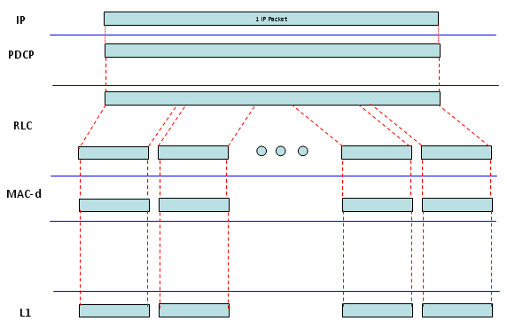
I will put some real traffic example sometime later.
Whenever I have inquiries about HSDPA related throughput problem, I am going through the following check list.
i) Does the Network (or Network Emulator) define TFRI table for max throughput ? ii) Does the TFRI Index has been selected at each transmission for max throughput ? iii) Does UE reflect the proper category information on �RRC Connection Setup Complete� ? iv) Does HARQ memory model is properly configured in Radio Bearer Setup ? (e.g, Implicit vs Explicit, Number HARQ, HARQ Memory Size etc) v) Does PHY layer shows any HARQ Retransmission ? vi) Does RLC shows any retransmission ? vii) Does PC inject the packet which is big enough to fully utilize the data pipe defined by theNetwork? viii) Does PC inject the data packet as frequently to fully utilize the data pipe ?
Now you may understand why I put such a amphasis on having proper logging tools for throughput troubleshoot. Almost none of the list you can check without having proper logging tool. The best option is to have such a logging tool both on Network side and UE side, but if not.. you should have the tools at least on one side (UE or Network).
Now let's look into overall data flow. In HSDPA case, the packet size at the input stage (IP packet size) is similar to the final L1 frame size, even though the final L1 frame size can be a little bit smaller and larger than the input packet size depending on HSDPA Category. But still you have MAC-d is involved in the data path and the MAC-d packet size is much smaller than IP packet size and L1 frame size. It means the IP packet should get splitted into multiple small chunks to go through MAC-d and have to be reassembled before it gets into L1. I don't think this is very efficient process but we would not be able to get rid of MAC-d because of current UMTS network architecture. Technically this kind of split/combine process can be a source of problems.
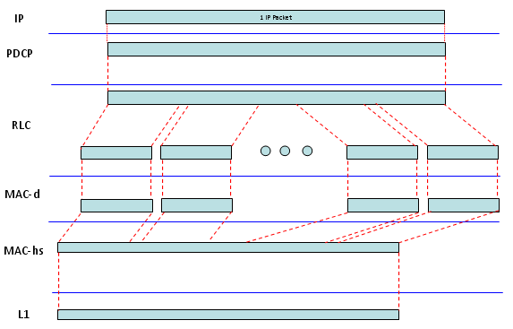
In HSDPA case, there is another issue that make situation complicated. In R99 case, the most common L1 transmission timing is 10 ms (1 TTI = 10 ms), but in HSDPA case the most common L1 transmission timing is 2 ms (1 TTI = 2 ms). It means that if L1 frame size is similar to one IP packet size, the PC tool should be able to create IP packet 500 times per second and Network's internal layer is operating fast enough to pass all those packets down to L1. It implies that PC performance or PC configuration can be a bottle neck for throughput test (especially HSDPA Category 8, 10 case).
For your reference, I created a table showing you a maximum (near maximum) throughput for most commonly used HSDPA categories. Just for this throughput issues, let's just focus on TTI, TBS, PDU. TTI shows how often a network transmit a chunk through PHY layer. For example, TTI = 2 means the network transmit a PHY layer data chunk every 2 ms. TBS is Transmit Block Size. The unit in 3GPP table is in Bits, but I added another column showing TBS in Bytes just for you to easily compare it with IP packet size which is normally expressed in Bytes. For example, if TTI = 2 and TBS = 3630, the network transmit a data chunk with the size of 3630 (about 453 bytes) bits every 2 ms. PDU is the data chunk of MAC-d. So PDU size is the size of data chunk getting out of MAC-d. If you compare PDU size and TBS, you will notice that TBS (PHY data chunk) is much bigger than PDU size. If you compare PDU size and common IP packet size (1500 Bytes), you will notice IP packet size is much bigger than PDU size. Putting all these together, you will figure out that in this process an IP packet should split into many PDUs and those many PDUs should be reassembled into a single Transport Block(TB) and then get transmitted through antenna. This is the meaning of diagram shown above.
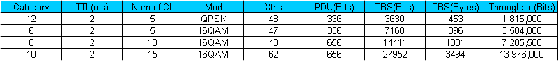
Another important thing you can notice from the table above is that from Category 8, one transport block size gets bigger than one IP packet. It means that PC has to tranmit one or more IP packets every 2 ms. If you see Category 10, you will notice that PC(Data Server) should be able to transmit more than 2 IP packets every 2 ms. So in this case, PC performance greatly influence the overall throughput.
So my recommendation, especially for high data rate category, is for you to check PC setting/performance and see if the PC performance is good enough for this testing. (Connect the client and server PC directly with LAN cable and do the PC-to-PC wireline throughput test and make it sure that the throughput is well higher than the expected UE throughput.
If you fully understood what was explained in HSDPA section, you can easily understand what would be the critical issue for HSPA+. Simply put, in HSPA+ case, you will have much bigger TBS comparing to conventional HSDPA. So you would guess, IP layer performance (e.g, Data Server and Client PC) would be much more important comparing to HSDPA case.
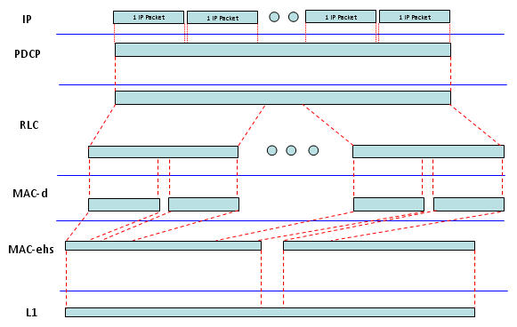
Just to give you clearer idea on this process. I put down the data flow at each layer. Go over these examples with special attention to the data size that I put in ( ).
< Example 1 > Cat 14, Ping Test
TE -> RLC : (60 Bytes) 45 00 00 3c 00 e5 00 00 80 01 b6 88 c0 a8 01 02 c0 a8 01 01 08 00 48 5c 03 00 02 00 61 62 63 64 65 66 67 68 69 6a 6b 6c 6d 6e 6f 70 71 72 73 74 75 76 77 61 62 63 64 65 66 67 68 69
RLC -> MAC : (82 Bytes = 656 Bits) 80 0d 79 fe 45 00 00 3c 00 e5 00 00 80 01 b6 88 c0 a8 01 02 c0 a8 01 01 08 00 48 5c 03 00 02 00 61 62 63 64 65 66 67 68 69 6a 6b 6c 6d 6e 6f 70 71 72 73 74 75 76 77 61 62 63 64 65 66 67 68 69 00 00 00 00 00 00 00 00 00 00 00 00 00 00 00 00 00 00
MAC->L1 : (3372 Bytes = 26976 Bits) 00 40 1c 00 6b cf f2 28 00 01 e0 07 28 00 04 00 0d b4 46 05 40 08 16 05 40 08 08 40 02 42 e0 18 00 10 03 0b 13 1b 23 2b 33 3b 43 4b 53 5b 63 6b 73 7b 83 8b 93 9b a3 ab b3 bb 0b 13 1b 23 2b 33 3b 43 48 00 00 00 00 00 00 00 00 00 00 00 00 00 00 00 00 00 00 00 00 00 00 00 00 00 00 00 00 00 00 00 00 00 00 00 00 00 00 00 00 00 00 00 00 00 00 00 00 00 00 00 00 00 00 00 00 00 00 00 00 00 ..... 00 00 00 00 00 00 00 00 00 00 00 00 00 00 00 00 00 00 00 00 00 00 00 00 00 00 00 00 00 00 00 00 00 00 00 00 00 00 00 00 00 00 00 00 00 00 00 00 00 00 00 00 00 00 00 00 00 00 00 00 00 00 00 00 00 00 00 00 00 00 00 00 00 00 00 00
In terms of throughput perspective, you can think of HSPA+ Dual Carrier as two HSPA+ running in parallel. So the IP layer tool performance will be almost critical factor. In this case, Data Server should be able to transmit almost 9 IP packets every 2 ms. In the same token, this means Client PC to which UE is connected to is working fast enough to receive all of these data and process. So the client PC performance is important as well
< Example 1 > Cat 24, Iperf UDP
TE -> RLC : (1498 Bytes) 45 00 05 da bf b5 00 00 80 11 f2 09 c0 a8 01 02 c0 a8 01 01 04 61 13 89 05 c6 4c f0 00 00 00 41 4d cc 77 da 00 06 a5 82 00 00 00 00 00 00 00 01 00 00 13 89 00 00 00 00 02 9f 63 00 ff ff e8 90 ..... 32 33 34 35 36 37 38 39 30 31 32 33 34 35 36 37 38 39 30 31 32 33 34 35 36 37 38 39 30 31 32 33 34 35 36 37 38 39 30 31 32 33 34 35 36 37 38 39 30 31 32 33 34 35 36 37 38 39
TE -> RLC : (1498 Bytes) 45 00 05 da bf b8 00 00 80 11 f2 06 c0 a8 01 02 c0 a8 01 01 04 61 13 89 05 c6 4c ed 00 00 00 44 4d cc 77 da 00 06 a5 82 00 00 00 00 00 00 00 01 00 00 13 89 00 00 00 00 02 9f 63 00 ff ff e8 90 ..... 32 33 34 35 36 37 38 39 30 31 32 33 34 35 36 37 38 39 30 31 32 33 34 35 36 37 38 39 30 31 32 33 34 35 36 37 38 39 30 31 32 33 34 35 36 37 38 39 30 31 32 33 34 35 36 37 38 39
TE -> RLC : (1498 Bytes) 45 00 05 da bf b8 00 00 80 11 f2 06 c0 a8 01 02 c0 a8 01 01 04 61 13 89 05 c6 4c ed 00 00 00 44 4d cc 77 da 00 06 a5 82 00 00 00 00 00 00 00 01 00 00 13 89 00 00 00 00 02 9f 63 00 ff ff e8 90 ..... 32 33 34 35 36 37 38 39 30 31 32 33 34 35 36 37 38 39 30 31 32 33 34 35 36 37 38 39 30 31 32 33 34 35 36 37 38 39 30 31 32 33 34 35 36 37 38 39 30 31 32 33 34 35 36 37 38 39
TE -> RLC : (1498 Bytes) 45 00 05 da bf b8 00 00 80 11 f2 06 c0 a8 01 02 c0 a8 01 01 04 61 13 89 05 c6 4c ed 00 00 00 44 4d cc 77 da 00 06 a5 82 00 00 00 00 00 00 00 01 00 00 13 89 00 00 00 00 02 9f 63 00 ff ff e8 90 ..... 32 33 34 35 36 37 38 39 30 31 32 33 34 35 36 37 38 39 30 31 32 33 34 35 36 37 38 39 30 31 32 33 34 35 36 37 38 39 30 31 32 33 34 35 36 37 38 39 30 31 32 33 34 35 36 37 38 39
RLC -> MAC : (1500 Bytes) 81 de 45 00 05 da bf af 00 00 80 11 f2 0f c0 a8 01 02 c0 a8 01 01 04 61 13 89 05 c6 4c f6 00 00 00 3b 4d cc 77 da 00 06 a5 82 00 00 00 00 00 00 00 01 00 00 13 89 00 00 00 00 02 9f 63 00 ff ff ... 30 31 32 33 34 35 36 37 38 39 30 31 32 33 34 35 36 37 38 39 30 31 32 33 34 35 36 37 38 39 30 31 32 33 34 35 36 37 38 39 30 31 32 33 34 35 36 37 38 39 30 31 32 33 34 35 36 37 38 39
RLC -> MAC : (1500 Bytes) 81 de 45 00 05 da bf af 00 00 80 11 f2 0f c0 a8 01 02 c0 a8 01 01 04 61 13 89 05 c6 4c f6 00 00 00 3b 4d cc 77 da 00 06 a5 82 00 00 00 00 00 00 00 01 00 00 13 89 00 00 00 00 02 9f 63 00 ff ff ... 30 31 32 33 34 35 36 37 38 39 30 31 32 33 34 35 36 37 38 39 30 31 32 33 34 35 36 37 38 39 30 31 32 33 34 35 36 37 38 39 30 31 32 33 34 35 36 37 38 39 30 31 32 33 34 35 36 37 38 39
RLC -> MAC : (1500 Bytes) 81 de 45 00 05 da bf af 00 00 80 11 f2 0f c0 a8 01 02 c0 a8 01 01 04 61 13 89 05 c6 4c f6 00 00 00 3b 4d cc 77 da 00 06 a5 82 00 00 00 00 00 00 00 01 00 00 13 89 00 00 00 00 02 9f 63 00 ff ff ... 30 31 32 33 34 35 36 37 38 39 30 31 32 33 34 35 36 37 38 39 30 31 32 33 34 35 36 37 38 39 30 31 32 33 34 35 36 37 38 39 30 31 32 33 34 35 36 37 38 39 30 31 32 33 34 35 36 37 38 39
RLC -> MAC : (1500 Bytes) 81 de 45 00 05 da bf af 00 00 80 11 f2 0f c0 a8 01 02 c0 a8 01 01 04 61 13 89 05 c6 4c f6 00 00 00 3b 4d cc 77 da 00 06 a5 82 00 00 00 00 00 00 00 01 00 00 13 89 00 00 00 00 02 9f 63 00 ff ff ... 30 31 32 33 34 35 36 37 38 39 30 31 32 33 34 35 36 37 38 39 30 31 32 33 34 35 36 37 38 39 30 31 32 33 34 35 36 37 38 39 30 31 32 33 34 35 36 37 38 39 30 31 32 33 34 35 36 37 38 39
MAC-> L1 : Primary Channel (5274 Bytes) eb b8 f4 eb b8 eb b8 e5 fb 81 1a 45 00 05 da bf 97 00 00 80 11 f2 27 c0 a8 01 02 c0 a8 01 01 04 61 13 89 05 c6 74 2d 00 00 00 23 4d cc 77 da 00 06 7e 63 00 00 00 00 00 00 00 01 00 00 13 89 00 ..... 33 34 35 36 37 38 39 30 31 32 33 34 35 36 37 38 39 30 31 32 33 34 35 36 37 38 39 30 31 32 33 34 35 36 37 38 39 81 22 45 00 05 da bf 98 00 00 80 11 f2 26 c0 a8 01 02 c0 a8 01 01 04 61 13 89 05 c6 74 2c 00 00 00 24 4d cc 77 da 00 06 7e 63 00 00 00 00 00 00 00 01 00 00 13 89 00 00 00 00 02 ..... 37 38 39 30 31 32 33 34 35 36 37 38 39 30 31 32 33 34 35 36 37 38 39 30 31 32 33 34 35 36 37 38 39 81 2a 45 00 05 da bf 99 00 00 80 11 f2 25 c0 a8 01 02 c0 a8 01 01 04 61 13 89 05 c6 74 2b 00 00 00 25 4d cc 77 da 00 06 7e 63 00 00 00 00 00 00 00 01 00 00 13 89 00 00 00 00 02 9f 63 00 ff ..... 31 32 33 34 35 36 37 38 39 30 31 32 33 34 35 36 37 38 39 30 31 32 33 34 35 36 37 38 39 81 32 45 00 05 da bf 9a 00 00 80 11 f2 24 c0 a8 01 02 c0 a8 01 01 04 61 13 89 05 c6 4d 0b 00 00 00 26 4d cc 77 da 00 06 a5 82 00 00 00 00 00 00 00 01 00 00 13 89 00 00 00 00 02 9f 63 00 ff ff e8 90 36 37 38 39 30 31 32 33 34 35 36 37 38 39 30 31 32 33 34 35 36 37 38 39 30 31 32 33 34 35 36 37 38 ...... 37 38 39 30 31 32 33 34 35 36 37 38 39 30 31 32 33 34 35 36 37 38 39 30 31 32 33 34 35 36 37 38 39 30 31 32 33 34 35 36 37 38 39 30 31 32 33 34 35 36 37 38 39 30 31 32 33 34
MAC-> L1 : Secondary Channel (5274 Bytes) e5 be fa eb b8 eb b9 35 36 37 38 39 30 31 32 33 34 35 36 37 38 39 30 31 32 33 34 35 36 37 38 39 30 31 32 33 34 35 36 37 38 39 30 31 32 33 34 35 36 37 38 39 30 31 32 33 34 35 36 37 38 39 30 31 ...... 32 33 34 35 36 37 38 39 30 31 32 33 34 35 36 37 38 39 30 31 32 33 34 35 36 37 38 39 30 31 32 33 34 35 36 37 38 39 81 3e 45 00 05 da bf 9b 00 00 80 11 f2 23 c0 a8 01 02 c0 a8 01 01 04 61 13 89 05 c6 4d 0a 00 00 00 27 4d cc 77 da 00 06 a5 82 00 00 00 00 00 00 00 01 00 00 13 89 00 00 00 00 02 9f 63 00 ff ff e8 90 36 37 38 39 30 31 32 33 34 35 36 37 38 39 30 31 32 33 34 35 36 37 38 39 ...... 36 37 38 39 30 31 32 33 34 35 36 37 38 39 30 31 32 33 34 35 36 37 38 39 30 31 32 33 34 35 36 37 38 39 81 42 45 00 05 da bf 9c 00 00 80 11 f2 22 c0 a8 01 02 c0 a8 01 01 04 61 13 89 05 c6 4d 09 00 00 00 28 4d cc 77 da 00 06 a5 82 00 00 00 00 00 00 00 01 00 00 13 89 00 00 00 00 02 9f 63 00 ...... 38 39 30 31 32 33 34 35 36 37 38 39 30 31 32 33 34 35 36 37 38 39 30 31 32 33 34 35 36 37 38 39 30 31 32 33 34 35 36 37 38 39 30 31 32 33 34 35 36 37 38 39 30 31 32 33 34 35 36 37 38 39 00 00 00 00 00 00 00 00 00 00 00 00 00 00 00 00 00 00 00 00 00 00 00 00 00 00 00 00 00 00 00 00 00 00 00 00 00 00 00 00 00 00 00 00 00 00 00 00 00 00 00 00 00 00 00 00 00 00 00 00 00 00 00 00 00 00 ...... 00 00 00 00 00 00 00 00 00 00 00 00 00 00 00 00 00 00 00 00 00 00 00 00 00 00 00 00 00 00 00 00 00 00 00 00 00 00 00 00 00 00 00 00 00 00 00 00 00 00 00 00 00 00 00 00 00 00
Ideal MAX throughput for UMTS UE
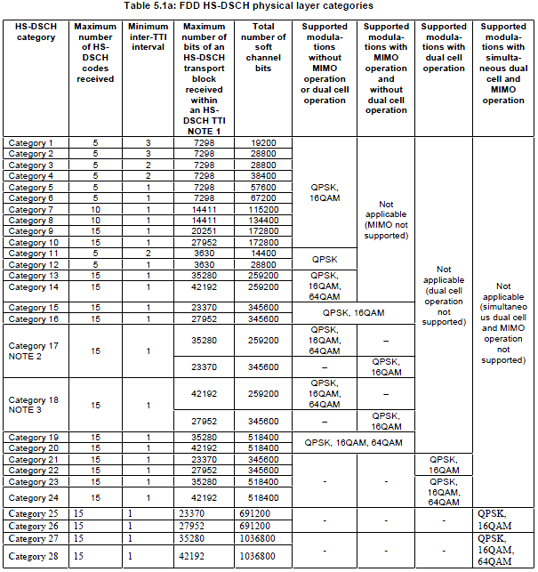
CQI vs Throughput for UMTS
In live network for HSDPA, Network sends data with different transport block size depending on CQI value reported by UE. For this mechanism to work properly, there should be a certain level of agreement between UE and the network about "which CQI value means which transport block size". These agreement is defined in the following tables of TS 25.214.
Then next question is which table do I have to use for which case ? The answer is in the following table from 24.214. As you see, we use different table depending on UE Category, Modulation Scheme, MIMO. For example, if a UE is Category 14 device and uses 64 QAM and does not use MIMO, it use Table G for CQI-Transport Block Size Mapping as shown below.
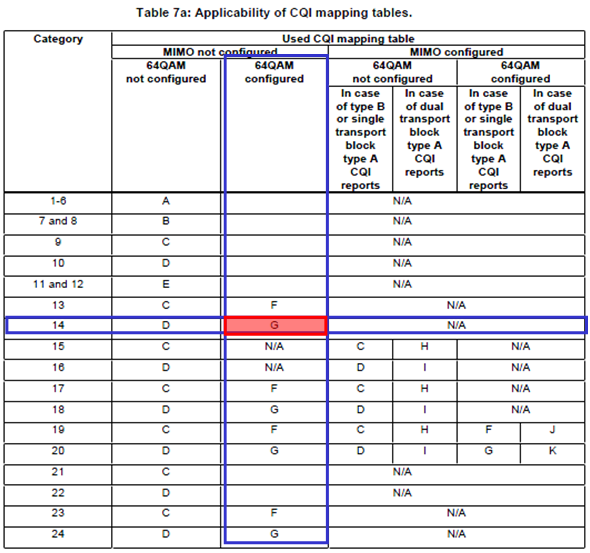
I put Table 7G as an example. As you see in the table, the range of CQI value is 0~30. 30 means the best channel quality and lower number indicates poorer channel quality. And Network has to send the data with the proper transport block size according to the CQI values. For example, i) If UE report CQI value 15, it is expected for Network to send data with transport block size of 3328 bits/TTI which is equivalent to around 1.6 Mbps. ii) If UE report CQI value 30, it is expected for Network to send data with transport block size of 38576 bits/TTI which is equivalent to around 19 Mbps.
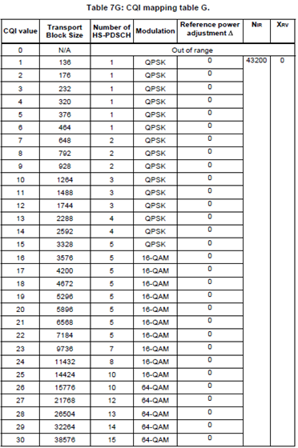
One thing you would notice that the transport block size for the highest CQI value is not amount to the ideal MAX throughput defined in 25.306 Table 5.1a. It implies that you wouldn't get the ideal Max throughput in any case with live network condition which may operate according to the CQI table defined in 3GPP. (It would not be any problem in real communication environment since your device would not report CQI 30 in most case).
However, many UE manufacturer/developer wants to see if their device can really reach the ideal max throughput. In that case, we normally use a special network simulator which allows us to set the largest transport block size for each UE category. It would be even better if the network simulator allows us to define CQI-transport block mapping table arbitrarily. Fortunately I have access to this kind of the equipment and I did an experiment as shown below using the network simulator and a HSDPA Category 10 UE.
First I defined a CQI-transport block size table very similar to Table 7D, but I changed the tranport block size for high end CQI (30, 29, 28, 27) to allocate larger tranport block than the ones specified in Table 7D to push the ideal MAX throughput. I programmed Network Simulator so that I decrease the downlink power by a certain steps. As downlink power (Cell Power) gets down, UE would report lower CQI and Network Simulator would transmit lower transport block size. The result is as follows. In the upper plot, you see three traces - Green, Red, Blue. Green trace means the everage CQI value within 500ms that UE reported. Red trace indicates the the amount of data in Kbps that the network emulator transmitted to UE within a second. Blue trace indicates the amount of data in Kbps that UE successfully decoded. If the Red trace and Blue traces overlaps, it implies that UE successfully decoded all the data transmitted by the network. If the Blue trace is lower than the Red Trace, UE failed to decode some of the data transmitted by the network. The black line shown in section A, B, C is the data rate defined in Table 7D, but I intentionally allocated the higher data rate for section A,B,C to push the data rate closer to the ideal Max throughput. In the lower plot, you see three traces - Green, Red, Blue. Green trace means the everage CQI value within 500ms that UE reported. Red trace indicates the amount of ACKs within 500 ms and Blue trace indicates the amount of NACKs within 500 ms.
There are a couple of things you may notice (The notes here may be different from what you observed from your device and test setting) i) Section A is the only region in which UE shows 100% data decoding without any failure. It means that you have to make it sure that your test equipment configuration, cable connection between the test equipment and UE is configured properly so that the channel quality belongs to this area. (I would say "CQI should be much higher than 30". I know 30 is the max CQI value. What I mean is that the channel quality should be much better than the quality in which UE barely reports CQI 30). ii) In Section B, you see huge drops in terms of throughput and huge increase in terms of number of NACKs. Main reason would be that I allocated too large transport block size for CQI 29, 28. There would also be some UE issues with this range. Section C,D,E shows a kind of normal trends, but ideally we should expect exact overlapping of rad trace and blue trace, but reality never goes like ideal -:)
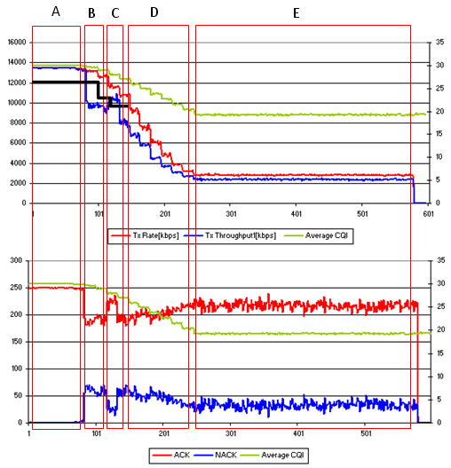
Even though there is huge difference between LTE and Non-LTE in terms of physical layer implementation, you can just think of this as just extention of HSPA. Which means that in LTE you will have even bigger TBS than HSPA+ Dual Carrier. So in this case, very high performance IP data server is the most important factor for throughput test. For the detailed data path for LTE, you can refer to another pages of this site. Almost whole of this site is about LTE.
For example, if you are testing a Category 3 Max throughput case (System BW 20 Mhz, Number of RB = 100), the idea max throughput is around 100 Mbps. Even with PC to PC direct connect, it is not easy to achieve this level of throughput. So for this kind of extremely high throughput test, it would be the mandatory step to try the PC (both server and client) performance first by connecting the two PCs directly with a crossover LAN cable and try the throughput test. In rare case, even the quality of LAN cable would influence on the throughput. I recommend you to use Cat 6 LAN cable which support Gigabit data rate.
In addition, using 64QAM in downlink would be very common in LTE. In this kind of very high modulation scheme, the throughput is influenced greatly by channel quality (RF signal quality). Small change in downlink power, Fading, AWGN can create large changes in throughput.
One of the most frequent questions that I get on the throughput test is "What is the ideal throughput with this condition ?" In case of R99 or HSPA, the ideal throughput is described in a neat page of table and a lot of people knows what kind of throughput they have to expect, but in LTE the situation got much more complicated since there can be several factors determines the throughput and each of the factors can have so many different values. So the number of all the possible combinations for defining the throughput is so huge. The most important factors to determine the ideal throughput are as follows :
The way to calculate the ideal throughput using these factors are explained in "Throughput Calculation Example" in Quick Reference page.
I made several examples of resource allocation and its ideal throughput as follows. These conditions are the most common condition for maximum throughput test. The values marked in gray cell is the one going over Category 3 LTE device capability. In most case, if I try the condition marked in gray cell with most commercial UEs that I tested (Category 3 UEs), I got one of the following result. i) The throughput degrade a lot (normally much lower than 100 M) ii) It reaches almost 100 M, but does not go over. (Thank God ! Call drop didn't happen even in this case)
<< Downlink Resource Allocation and Throughput >>
<< Uplink Resource Allocation and Throughput >>
Now I got what to expect for the throughput. Do I get this value if I just plug in my device into the test equipment and do FTP/UDP ? In most case, the answer is NO. Why not ? There are couple of factors you have to keep in mind as follows : i) The ideal throughput value in the table is on the basis of physical layer operation, not based on higher layer (e.g, IP layer) throughput. ii) The ideal throughput value in the table is based on the assumption that there is no physical layer overhead and we can allocate these resource at every subframe
When a stream of data comes from IP layer to the physical layer, there are some overhead being added (e.g, PDCP header, RLC header, MAC header etc). So the IP layer throughput gets lower than the physical layer. What kind of other overheads we can think of ? Followings are the most common overhead. i) SIB transmission ii) Symbols allocated for PCFICH and PDCCH.
At the subframe where SIB is transmitted, you cannot allocate the full bandwidth for data transmission. If you can dynamically allocate a little smaller No of RBs in these slots, you only have to sacrifice the number of RBs for SIB transmission.. but in most test equipment the situation is even worse. The equipment does not allow such kind of dynamic resource allocation just to avoid the overlapping of SIB and user data. In this case, the equipment does not tranmit any user data at the subframe where SIB is being tranmitted. In such a case, SIB transmission can be pretty huge overhead for the max throughput test.
Another overhead is the one by PCFICH and PDCCH. As you learned from Downlink Framestructure section, there is at least one symbols (max 3 symbols of each subframe are allocated for PCFICH and PDCCH). If you allocate three symbols for PCFICH and PDCCH, which means that you set PCFICH, 3 out of 14 symbols are allocated for non-user data. However, speaking purely in ideal sense this overhead would not influence the ideal throughput since the transport block size determined by 3GPP for each combination of resource allocation took this overhead into account. But in reality, if you allocate too large Transport block size (too high MCS and No of RBs) and allocate large PCFICH (e.g, 2 or 3), it normally reads to a lot of CRC error which in turn results in throughput degradation.
As far as I tried with commercial device, the MAX IP layer throughput (UDP) that I achieved was around 90 Mbps with 20 Mhz system bandwith and MIMO condition. Physical layer throughput approaches almost 100 Mbps (only a couple of Mbps lower than 100 Mbps).
LTE Physical Layer Throughput - PDSCH Decoding Performance
Refer to PHY/L1 Performance Test page.
Details would come later
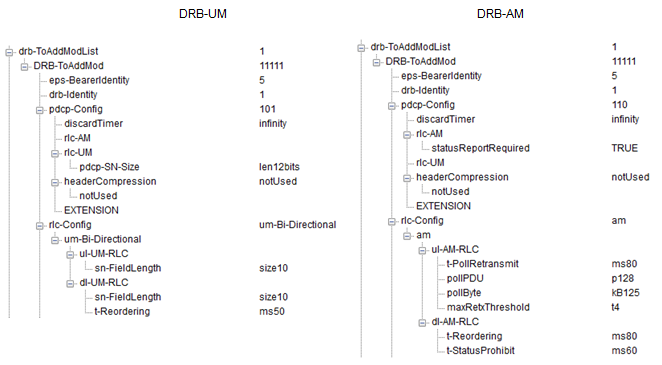
When there is big difference between PHY throughput and RLC/Above throughput
Details would come later
This would be the most trickest part of throughput troubleshooting and for complete root cause analysis, you would need very detailed logging tools that can show following information.
As you naturally guess, the throughput you would achieve in Live Network would be different in large degree from the one you get with test equipment. It is because the radio channel condition and the network components (or performance of the components) will be different and another big impact is that in live network usually multiple UEs shares a resource whereas in test equipment you can allocate the full resources only to single UE (DUT).
Factors influencing Throughput
I have an excellent tips for troubleshooting for throughput or throughput optimization. It is "There is no short cut for it". I saw a lot of cases where people just are just trying to find the short cut and eventually spend more time and energy.
I will give you my personal approach in this section.
First, write down all the components in the data path (Really "write down" on the paper or in computer document software.). Following are a couple of examples for the description of the data path. You would have more Cases on your own and you would describe it in more detail, meaning putting down more detailed components in the path. The more components you can write down, the sooner you would achieve your goal.
Case 1 : UE Packet App on UE PC -(1)-> UE IP Driver -(2)-> UE PDCP -(3)-> UE RLC -(4)-> UE MAC -(5)-> UE PHY -(6)-> RF Connection -(7)-> Equipment PHY -(8)-> Equipment MAC -(9)-> Equipment RLC -(10)-> Equipment -(11)-> Equipment PDCP -(10)-> Equipment TE -(11)-> Network Interface on Server PC -(12) -> Packet App on Server PC
Case 2 : UE Packet App on UE -(1)-> UE PDCP -(2)-> UE RLC -(3)-> UE MAC -(4)-> UE PHY -(5)-> RF Connection -(6)-> Equipment PHY -(7)-> Equipment MAC -(8)-> Equipment RLC -(9)-> Equipment -(10)-> Equipment PDCP -(11)-> Equipment TE -(12)-> Network Interface on Server PC -(13) -> Packet App on Server PC
Case 3 : Client UE Packet App on UE -(1)-> WiFi Stack on Client UE -(2)-> WiFi Connection -(3)-> WiFi Stack on Mobile Hotspot UE -(4)-> Hotspot UE PDCP -(5)-> Hotspot UE RLC -(6)-> Hotspot UE MAC -(7)-> Hotspot UE PHY -(8)-> RF Connection -(9)-> Equipment PHY -(10)-> Equipment MAC -(11)-> Equipment RLC -(12)-> Equipment -(13)-> Equipment PDCP -(14)-> Equipment TE -(15)-> Network Interface on Server PC -(16) -> Packet App on Server PC
Second, ask yourself "Do I have any measure/tools to see what's happening in each and every components ?". (Wireshark, UE logging tool, Network logging tool would be the minimum requirement).
Third, ask yourself "Do you have knowledge and skills to analyze every and each components you wrote down at step 1?" It would not be highly possible for you to be the one who knows everything. At least try to get other persons ready to help you analyze those data.
Fourth, try to indetify important parameters influencing the throughput. The more, the better. Following is an example list coming from my experience.
Lastly, do the test and analysis as much as possible before the problem is find by somebody else. Normally if any problem happens, almost everybody including me wants to get it solved right away. But solving the throughput related problem right away is just a matter of luck, not the matter of engineering/science. I don't like any situation which would depend only on luck. The best way is to analyze the device as in detail as possible and see how each of the factors listed above influence the throughput of the device. Each of the factors influence in different ways to different device model/software. This is the only way to find the solution the soonest when the problem happens in the field.
Links on Throughput Test in the field
Iperf would be one of the most common tools for data throughput test because of easy installation, easy operation, less overhead.
You can download iperf from http://sourceforge.net/projects/iperf/ I think you can get pretty good tutorial from http://openmaniak.com/iperf.php
Tips : i) When you do UDP test, don't push too high data comparing to the expected data rate. ii) When you do TCP test, set window size (-w option value) very carefully. (There is no clear/direct way to figure out the optimum value. You would need some try and error).
You can download FileZilla Client and Server from following sites.
For general setup, refer to tutorials you can search from various source.
For very high data rate application (e.g, LTE throughput test), downloading only one file would not push the enough data rate. A workaround for this case is to download multiple files simultaneously. For this kind of multiple download, you have to configure FileZilla server and Client to enable multiple download/upload. You can set this configuration as shown below.
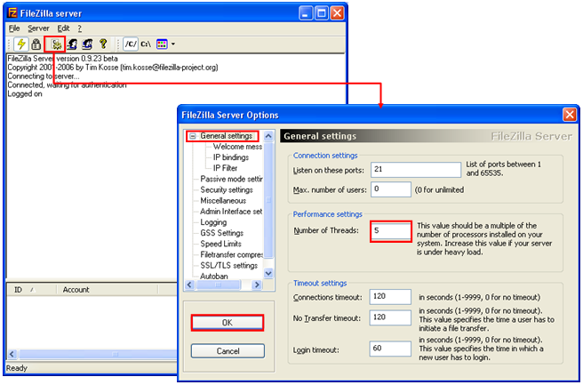
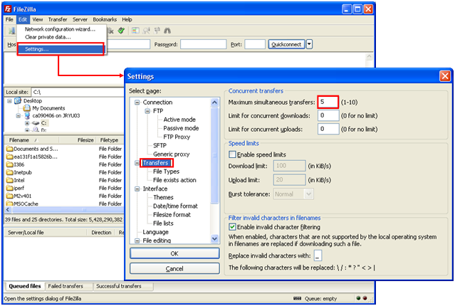
The maximum FTP throughput that I got was around 97 Mbps with FileZilla using a LTE data card, system bandwidth 20M, MIMO.
|